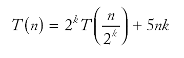

|
 |
| n |
seconds |
| 5000 |
2 |
| 10000 |
5 |
| 20000 |
21 |
| 40000 |
88 |
Time now
Time before;
selection_sort(v);
Time after;
cout << "Elapsed time = " << after.seconds_from(before)
<< " seconds\n";
|
|
| n |
seconds |
| 5000 |
2 |
| 10000 |
5 |
| 20000 |
21 |
| 40000 |
88 |
because

void merge_sort(vector<int>& a, int from, int to)
{ if (from == to) return;
int mid = (from + to) / 2;
/* sort the first and second half */
merge_sort(a, from, mid);
merge_sort(a, mid + 1, to);
merge(a, from, mid, to);
}
Merge Sort (mergsort.cpp)
 |
| n |
seconds |
| 160000 |
1 |
| 320000 |
2 |
| 640000 |
4 |
| 1280000 |
9 |

v[0]
v[1]
v[2]
v[3]
v[4]
v[5]
v[6]
v[7]
14
43
76
100
115
290
400
511
v[4]
v[5]
v[6]
v[7]
115
290
400
511
|
v[5]
|
|
115
|